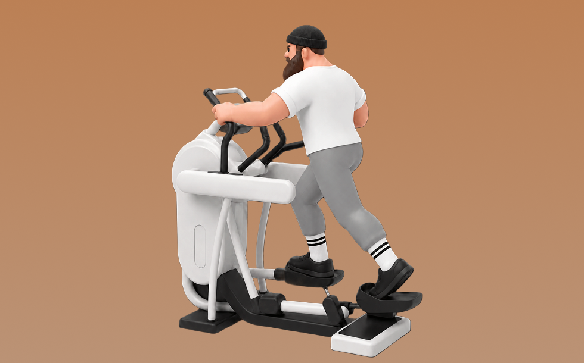

エリプティカル

エリプティカルとは、マシンを使って「手足を連動させて楕円軌道で動かす」動作を行い、全身と心肺機能を鍛える有酸素トレーニングです。衝撃が少なく全身を使いやすいのが特徴で、リズミカルに動作を繰り返します。これにより、持久力向上や脂肪燃焼が期待できます。
- 対象部位
- 有酸素
- 器具
- マシン
- 記録形式
- 時間
- 別名
- クロストレーナー / エリプティカル / エリプティカルマシン / elliptical / elliptical trainer / cross trainer / orbitrek
YouTube動画
-
お尻にも効く！「クロストレーナー」最強有酸素マシン ティップネスしか知らない世界
-
ジムトレの基本マシン【クロストレーナー】の使い方解説〜効率的に有酸素運動＆全身トレーニング〜
-
ゼロから覚える！初めての「クロストレーナー」
-
魔法教えます！「お尻に効くバイクの乗り方」有酸素マシン編【トレーニングマシン】
-
クロストレーナー（トレーニング動画）
-
エリプティカルの効果的な有酸素運動方法/脂肪燃焼/MATRIX/ジョイフィット24四ツ橋 #有酸素運動 #脂肪燃焼
-
How to Use an Elliptical Trainer
-
HOW TO USE AN ELLIPTICAL | Beginner's Guide
-
脚を細くする歩き方 ランニングマシンの設定方法！トレッドミル/Walking on a Treadmill to Tone Your Legs
-
アブドミナルクランチの使い方【Matrix Fitness】Aura G3-S51
-
アップライトバイクの基本的な使い方
-
【関節に優しい】クロストレーナーの効果的な使い方🦵
-
有酸素運動にトライ！正しい走り方って難しい！？
-
ヒップアダクターアブダクターの使い方【MATRIX】VS-S74
-
エリプティカルトレーナー
-
クロストレーナーの使用方法 初心者向け ＃3
-
SPIRIT FITNESS CE800 エリプティカル･クロストレーナー
-
女性向け！足を細く見せる効率の良い方法！クロストレーナーの使い方！【エニタイムフィットネス広島五日市店】
-
トレーニング器具紹介 トレッドミル編
-
全マシン使い方動画
-
パワーミルクライマー（トレーニング動画）
-
How to Get the Most Out of Elliptical | Gym Workout
-
レッグカールの使い方【MATRIX】VS-S72
YouTubeショート
-
【誰でもわかるマシンの使い方】クロストレーナー編#shorts
-
ウォーキングマシンで代謝を上げる！ #ダイエット
-
クロストレーナーの使い方
-
走らなくてもどんどん痩せるトレッドミルルーティン
-
I LOVE DOING THIS! How do beginners do elliptical machine workout?
-
elliptical: how to use an elliptical?
-
ELLIPTICAL TUTORIAL 🏃🏻♂️ // Low-impact cardio that uses your full body at Planet Fitness!
-
How to use elliptical machine properly?
-
消費カロリー1064🔥クロストレーナー70分
-
アンデス7iの準備
-
【痩せるならコレ】痩せる有酸素運動のやり方！ #有酸素運動 #ランニング #ジョギング #痩せる #ダイエット #ジム #筋トレ #トレッドミル #雑学 #豆知識 #筋トレ女子 #筋トレ初心者
-
mobifitnesssクロストレーナーを利用して気軽に美女になりましょう
動作方法
- ウォームアップで心拍を段階的に上げる
- 目的に合わせてペースを設定する
- 終了後はクールダウンで整える
動作ポイント
- 呼吸を止めない
- 開始直後に追い込みすぎない
ワンポイントアドバイス
- 体調に合わせて時間や強度を調整する
- ペースより継続を優先する
目的別回数設定
目的や体力に応じた一般的な目安です。無理のない範囲で調整してください。
- 筋力アップ
- 高強度 20〜60秒
- 筋肥大
- 中強度 10〜20分
- 持久力アップ
- 低〜中強度 20〜60分
YouTube動画について
動画はYouTubeの公開情報をもとに表示しています。内容は投稿者によるもので、Biggrによる監修ではありません。
アプリを入手
筋トレやトレーニングの記録はBiggrにお任せください。今すぐ無料で使い始められます。